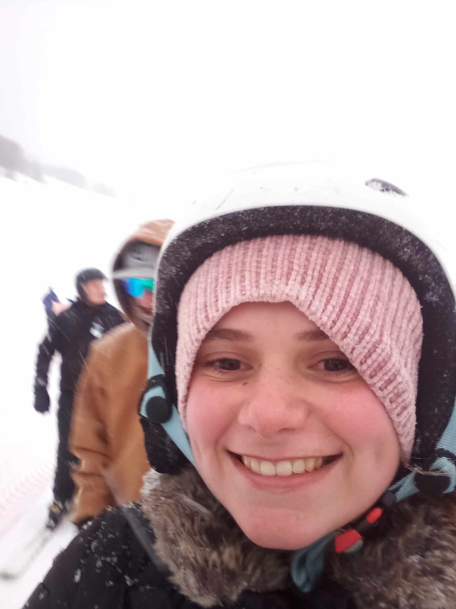

Evelyn Howell | WDD 130
My name is Evelyn Howell. Before I came to BYUI I lived in Ogden Utah. we had beautiful mountains right next my house and my family went hiking a lot I was sad to leave it, but I am getting an education and it is good to be here. I love Utah I have been al over Utah to all five national parks. I love to explore slot caynons and my favorite place to visit is goblin valley. The person that introduced me to the wonderful adventures that utah has to offer is my dad he loves to go to different places all over Utah. My favorite national park is Zions national park I loved going through keyhole canyon and subway canyon, and my favorite hike is angels landing.